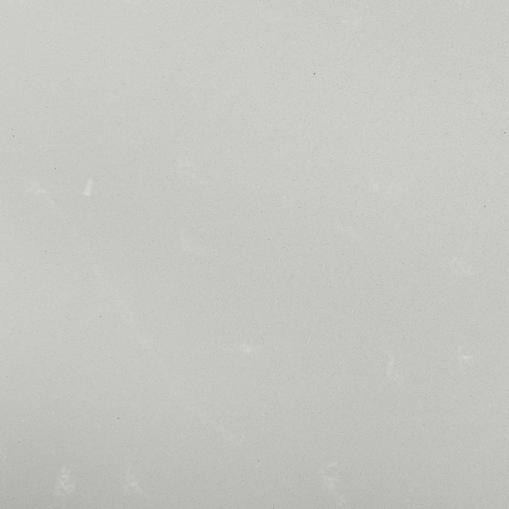
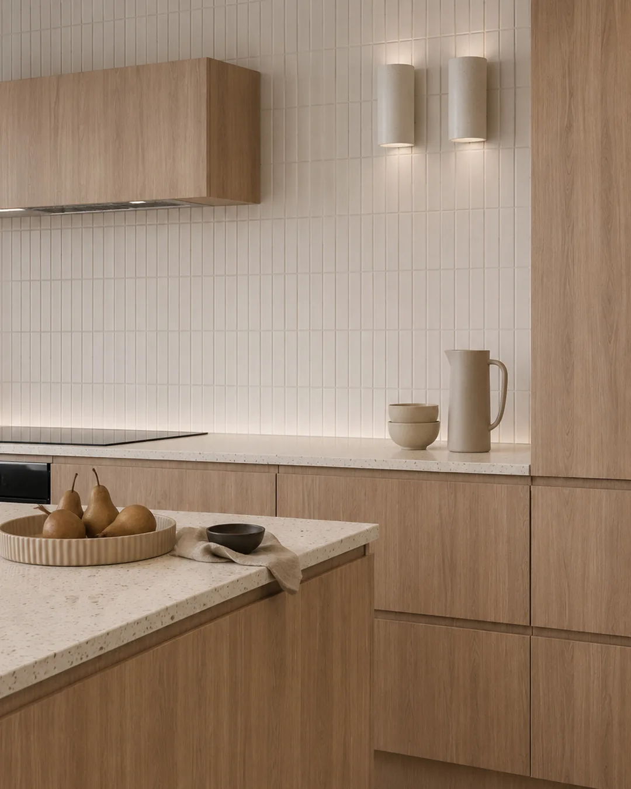

Surfaces worth
choosing once.
Decorative surfaces for kitchens, cabinetry and interiors. Chosen for colour, texture and the way they actually live in a home.
Solid surfaces
Start with the colour.

Calacatta Oro
Creamy white / gold and caramel veining
Aurora Cloud
Pale grey / delicate grey and white veining

Sabbia Dune
Warm beige / gentle granular movement

Artesian Concrete
Ecru / fine concrete texture
Taj Sogno
Warm off-white / taupe / gold / soft grey

Ombra Concrete
Charcoal grey / weathered texture

Luna Bianco
Pure white / fine light grey speckle
Glacier White
Crisp white / clean and even

A surface rarely gets chosen alone. Show it on its own, then show what belongs beside it.

What you are buying
The look of stone. None of the silica.
Made from natural minerals with zero silica content. It can be cut safely on site, joined without visible seams and repaired if it is ever damaged.
Zero silica
Safer for your installer to cut, and for the people who make it.
Repairable
Chips and scratches can be restored to original condition. No replacing the whole benchtop.
Seamless
Pieces join into one unbroken island. Colour and texture run through the full thickness.
Outdoor range
UV resistant, so outdoor colours do not fade or chalk in the sun.
MDF routed doors
The door beside the benchtop.


Trade
No pitch. Just what you need.
Fast samples, spec sheets and trade pricing for designers, cabinetmakers, builders and showrooms. Custom sheet sizes to cut waste, and custom colours for developments of 100+ units.
Trade enquiriesThe maker
SURFES surfaces and doors are manufactured in Australia by Craftmark, a cabinetry and joinery manufacturer with over 20 years in the industry.
See it where it will live.
Order a sample and look at it in your own light, morning and evening, beside your cabinetry. Then decide.